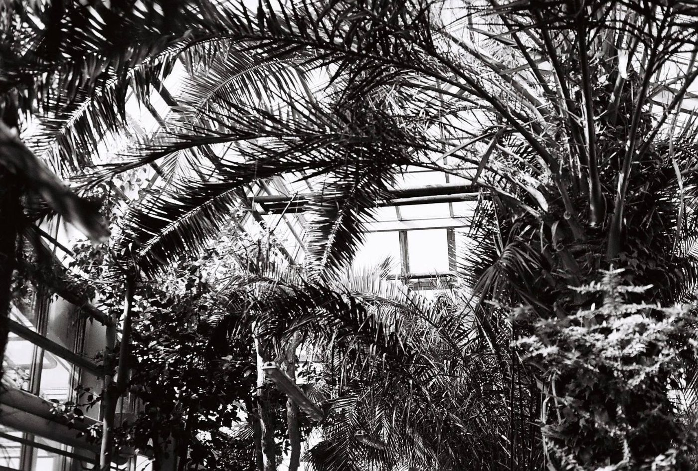
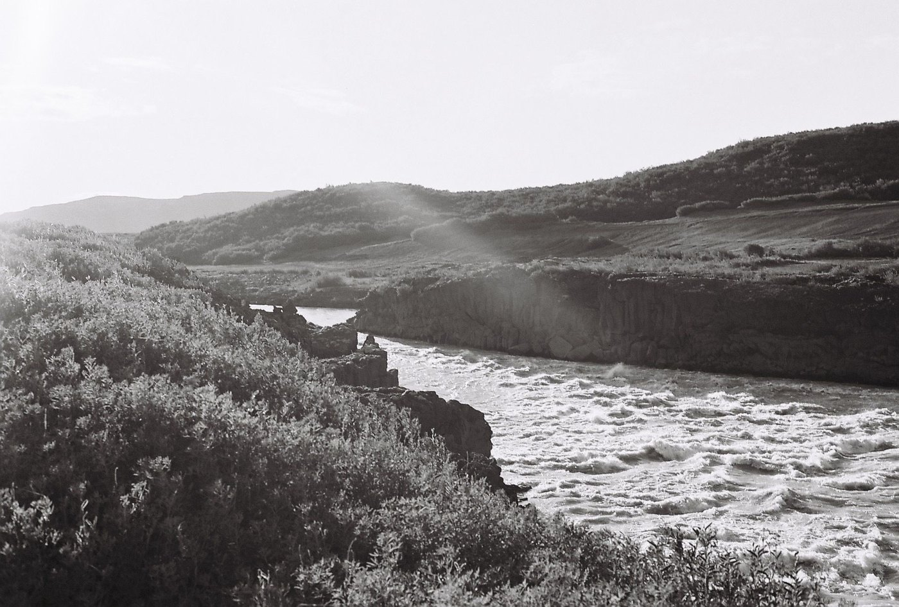

Kaip aš dirbu
Egzistencinis-humanistinis požiūris
Šis požiūris padeda geriau suprasti savo gyvenimą ir tai, kaip jį gyvenate.
Žmogus čia matomas neatsiejamai nuo savo gyvenimo aplinkybių ir santykių. Kartu žiūrime, kokie modeliai ir dilemos kartojasi jūsų gyvenime ir kaip galėtumėte kurti jums prasmingą ateitį. Dėmesį skiriame ir klausimams, su kuriais anksčiau ar vėliau susiduria kiekvienas, pavyzdžiui, laisvei ir atsakomybei ar prasmės paieškoms.
Egzistencinėje-humanistinėje psichoterapijoje man labiausiai patinka lygiavertis buvimas su klientu ir galimybė pažvelgti į kiekvieno žmogaus gyvenimą jo akimis, netaikant vieno šablono visiems.
Esu LGBTQ+ draugiška psichologė.
Daugiau apie egzistencinę-humanistinę psichoterapiją
- Existential Psychotherapy: Death, Freedom, Isolation, MeaninglessnessVaizdo įrašas, Academy of Ideas, YouTube, anglų kalba
- Searching for meaningStraipsnis, Michael Price, Monitor on Psychology (APA), 2011, anglų kalba
- Inside an Existential-Humanistic Therapy SessionStraipsnis, Bob Edelstein, Psychology Today, 2023, anglų kalba

Studijos ir supervizija
Šiuo metu studijuoju egzistencinę-humanistinę psichoterapiją Humanistinės ir egzistencinės psichoterapijos institute (HEPI), Europos akredituotoje psichoterapijos mokymo įstaigoje. Savo darbą aptariu egzistencinės-humanistinės krypties supervizijose.
Tyrinėdama emocijų reguliaciją ENBER tinkle ir atnaujindama ADHD bei streso grupių programas, nuolat susipažįstu su naujausiais moksliniais tyrimais. Tai padeda išlikti kritiškai ir nuolat siekti naujų žinių.
Psichologinės konsultacijos vyksta internetu, lietuvių arba anglų kalba.
Kam aš galiu netikti
Aš galiu netikti, jei ieškote krizės intervencijos, oficialios diagnozės, medikamentinio gydymo ar jo tikslinimo arba labai struktūruotų trumpalaikių konsultacijų. Tokiais atvejais galėčiau tik nukreipti jus pas tinkamesnį specialistą.